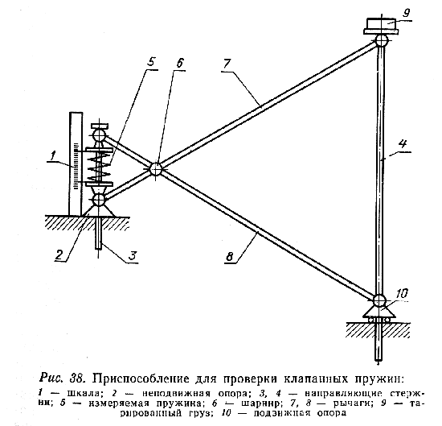
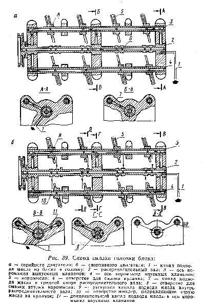

Механизм газораспределения в автомобильном двигателе предназначен, для впуска в цилиндры свежей горючей смеси и для выпуска отработавших газов и должен обеспечивать наилучшие условия наполнения и очистки цилиндров, надежную работу двигателя на всех скоростных и нагрузочных режимах, высокую износостойкость и долговечность деталей, входящих в его конструкцию. Впускной и выпускной клапаны двигателя работают в тяжелых условиях. Поэтому они должны быть прочными и износостойкими. Головка впускного клапана во время работы периодически омывается сравнительно холодным потоком свежей горючей смеси, в связи с чем нагревается не выше 300-400° С. Это дало возможность при изготовлении клапанов увеличенного диаметра для форсированного двигателя выполнить их с углом фаски 30° вместо 45°. Такая фаска хотя и снижает общую жесткость клапана, но обеспечивает большую величину площади его проходного сечения при относительно малой высоте подъема.
Кроме того, при изготовлении указанного клапана из впускного клапана двигателя
ГАЗ-24* появляется возможность использовать хорошо выраженную тюльпанообразность
последнего. По сравнению с плоскими тюльпанообразные головки клапана имеют лучшую
обтекаемость со стороны входа потока смеси и несколько улучшают процесс вихреобразования
в цилиндре благодаря тому, что за клапаном возникает движение потока воздуха,
повторяющее геометрическую форму впадины в его головке. Масса впускного клапана
увеличенного размера оказалась меньше (67 г), чем масса стандартного клапана
(75 г).
Выпускной клапан, омываемый горячим потоком отработавших газов, работает при
очень высокой температуре (800-850° С) в химически агрессивной среде, содержащей
сернистые и другие компоненты. Основная часть теплоты, воспринимаемой выпускным
клапаном, отводится через его седло. Из-за высокой температуры, окисления и
подгорания посадочного пояска головки на клапане в форсированном двигателе часто
образуется окалина. Это ухудшает теплоотдачу от клапана к седлу, повышает его
температуру и может привести к прогоранию. Поэтому за герметичностью выпускного
клапана следует следить с особым вниманием. Проверку на герметичность следует
делать при каждом снятии головки цилиндров, а притирку производить обязательно
после 2-3 ралли, т. е. через каждые 15-20 тыс. км пробега.
Опробованная ширина фаски 0,8-1,0 мм хорошо себя зарекомендовала на двигателях
ВАЗ, а герметичность при этом сохраняется несколько дольше. Клапанные пружины
занимают особое место в работе всего механизма газораспределения. К ним предъявляются
следующие требования: обеспечение плотной посадки клапана в периоды его закрытия
и предотвращение самопроизвольного открытия клапанов; обеспечение кинематической
связи клапана с кулачком распределительного вала на практически допустимом скоростном
режиме; отсутствие вибраций на рабочих режимах. При подготовке двигателей к
соревнованиям необходимо повысить жесткость клапанных пружин на 15-20%, так
как в режиме 6500-7000 об/мин в двигателе появляются перебои, связанные с нарушением
четкости работы клапанного механизма.
На УМЗ это делается подбором более жестких пружин (наружной и внутренней) из
числа стандартных, а под клапанные пружины подкладывают шайбы высотой 1,5-1,6
мм*. Имея достаточный выбор из старых и новых пружин, подбираем их так, чтобы
суммарное усилие каждой пары (наружной и внутренней) пружин было одинаковым
во всем комплекте.
Делается это на простом приспособлении (рис. 38) замером деформации пружины в миллиметрах при одинаковой нагрузке (5 кг). Подбор пружин с одинаковой жесткостью не менее важен, чем подгонка по массе шатунов, поршней, клапанов и других деталей двигателя, совершающих возвратно-поступательное движение. Повышение жесткости клапанных пружин преследует одну цель: снизить влияние сил инерции, которые зависят в первую очередь от массы деталей механизма газораспределения. В двигателе М-412 применяются коромысла из прочного чугуна. Несмотря на их массивность при больших оборотах встрелись случаи их поломки.

В 1972 г. на УМЗ была изготовлена опытная партия стальных коромысел. Они при сравнительно малом весе достаточно прочны. Поэтому, не боясь поломки двигателя, можно развивать обороты до 7000-7500 об/мин. Но имеется и существенный недостаток. Пара "чугунный кулачок распределительного вала - стальное коромысло" работает с повышенным трением и, следовательно, перегревом в месте контакта. В результате появляются значительные износные выработки на кулачке и наконечнике коромысла. Смазывающий и охлаждающий эффект моторного масла при существующей системе смазки оказывается недостаточным. На рис. 39 показана измененная система смазки, которая позволила интенсифицировать подачу масла непосредственно в место контакта кулачка с коромыслом. Срок службы стальных коромысел стал не меньше, чем чугунных. Эту систему смазки можно использовать и при стандартных чугунных коромыслах, так как на практике, хотя и редко, бывают надиры на кулачках и наконечниках коромысел 4-го всасывающего клапана. Переделка системы смазки сводится к сверловке отверстий в головке блока и в осях коромысел и перекрытию (можно мягкими заклепками) отверстий для смазки коромысел в средней шейке распределительного вала.

После сборки головки цилиндров следует обратить внимание на то, чтобы виток пружины на оси коромысла не перекрывал вновь сделанное отверстие для смазки. Обычно высокооборотные двигатели имеют сильно развитые фазы газораспределения. С увеличением числа оборотов возрастает скорость движения газов в трубопроводах и соответственно увеличивается инерция газового потока, которая используется для улучшения наполнения цилиндров горючей смесью и для лучшей очистки цилиндров от отработавших газов. Для более полной очистки цилиндров и уменьшения противодавления на поршень при вытеснении им отработавших газов выпускной клапан открывается значительно раньше, чем поршень достигает НМТ. При больших числах оборотов отработавшие газы не попадают во впускной трубопровод, а свежий заряд горючей смеси - в выпускной, так как потоки их имеют разное направление. При малых же оборотах коленчатого вала подобные явления могут иметь место в период перекрытия клапанов. Поэтому выбор фаз газораспределения проверяется экспериментально в зависимости от назначения двигателя.